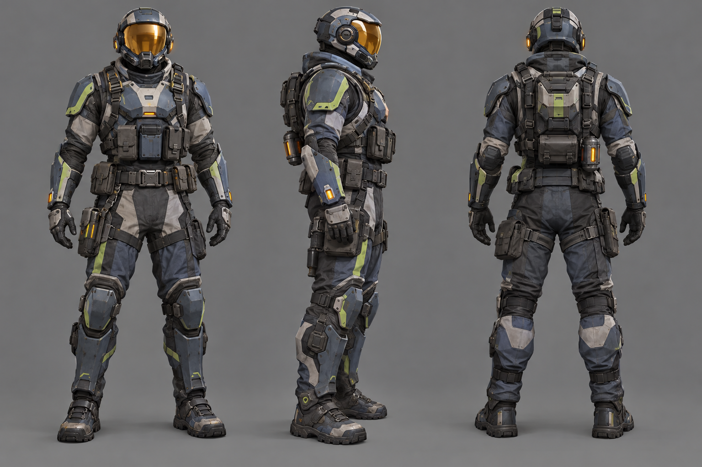

01 · Operator (third-person)
Concept brief
Character concept sheet of an original frontier expedition soldier for a sci-fi battle royale, full-body front, side and back turnaround, practical armored survey suit with layered soft and hard plates, rounded helmet with a wide amber visor, utility harness and pouches, muted slate-blue and graphite colors with pale lime accent stripes, readable silhouette at distance, neutral grey background, clean concept art, no text.